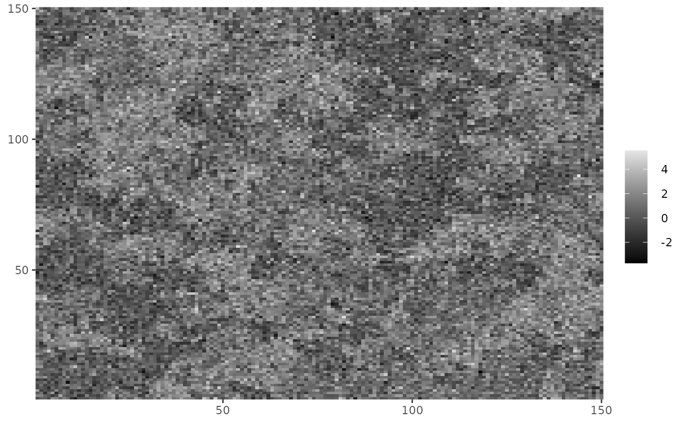

dplot() and cplot() are functions for plotting lattice data.
They are an alternative to base R's image() function using ggplot2
instead.
dplot is used for discrete data and cplot for continuous data, they only
differ in the fact that pixel values are treated as a factor in dplot,
therefore, a discrete scale is used.
dplot(Z, legend = FALSE)
cplot(Y, legend = TRUE)A matrix object with integers only.
logical indicating whether a legend should be included or not.
A matrix object with continuous values.
a ggplot object.
Since returns a ggplot object, other layers can be added to it
using the usual ggplot2 syntax in order to modify any aspect of the plot.
The data frame used to create the object has columns named x, y and
value, which are mapped to x, y and fill, respectively, used
with geom_tile().
# Plotting discrete data
dplot(Z_potts)
#Making it continuous
cplot(Z_potts + rnorm(length(Z_potts)))

#Adding extra ggplot layers
library(ggplot2)
dplot(Z_potts) + ggtitle("This is a title")
dplot(Z_potts, legend = TRUE) + scale_fill_brewer(palette = "Set1")
#> Scale for 'fill' is already present. Adding another scale for 'fill', which
#> will replace the existing scale.